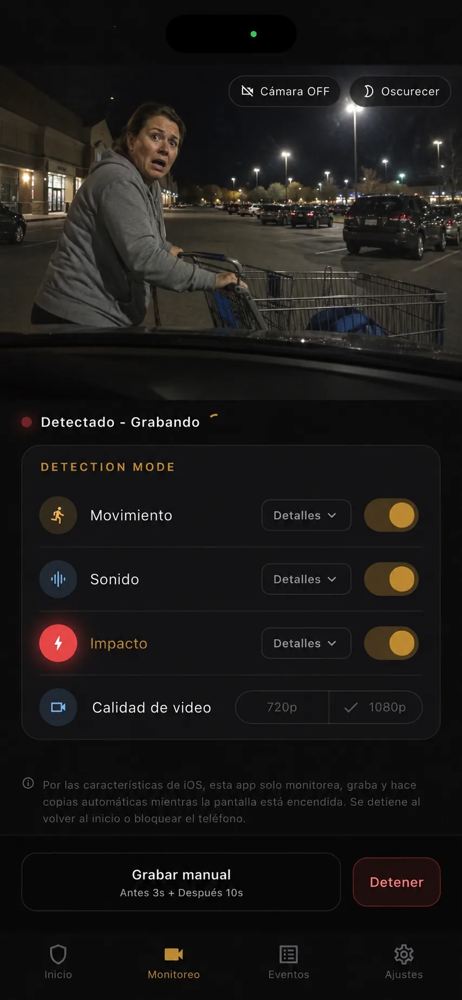

Encuadra la trayectoria
Incluye el carril, la plaza contigua y la esquina de tu coche más expuesta al entrar o salir otro vehículo.
Prepárate antes de un golpe en el aparcamiento
Una cámara no evita que alguien golpee el coche y se marche, ni garantiza una prueba concluyente. Sí puede conservar una secuencia con la aproximación de un vehículo, el posible contacto y lo que sucede después si el encuadre es adecuado y responde alguno de los detectores seleccionados.
Actualizado:

Incluye el carril, la plaza contigua y la esquina de tu coche más expuesta al entrar o salir otro vehículo.
El movimiento puede ver la aproximación, el sonido oír un contacto y el impacto responder si la vibración llega al móvil.
Guarda el original local e identifica qué clips muestran aproximación, posible contacto y salida sin deducir más de lo visible.
Al descubrir una marca, suele ser más informativo el vídeo que relaciona un vehículo con el espacio junto al tuyo: cómo se acerca, dónde queda situado, si hay un posible contacto, si se detiene y por dónde sale. El encuadre debe ser suficientemente amplio para incluir el carril, pero no tanto como para reducir el vehículo a una figura diminuta.
BlackShisa conserva tres segundos antes de la detección y graba 10, 30 o 60 segundos después, según la opción elegida. El tramo previo puede mostrar la aproximación y un tramo posterior largo, la salida. La lectura de una matrícula o de otros detalles sigue dependiendo de velocidad, distancia, luz, reflejos, enfoque y obstáculos.
La orientación cambia si aparcas de frente o marcha atrás y según cuál de los lados quede más estrecho. El parabrisas puede cubrir el tráfico frontal; una ventanilla lateral muestra mejor la plaza vecina. Si el riesgo principal está en la esquina trasera, conviene mirar hacia atrás. Un solo teléfono no cubre todo el perímetro, por lo que hay que escoger una prioridad.
Usa un soporte firme y acerca la lente a un cristal limpio para reducir los reflejos del salpicadero y del interior. No obstaculices la visibilidad necesaria para conducir ni interfieras con mandos o airbags. Haz una prueba con alguien recorriendo la trayectoria relevante y abre el archivo guardado, no solo la vista previa, para comprobar tamaño, luz y zonas ocultas.
La detección de movimiento puede iniciar un evento cuando el vehículo entra en imagen, antes del contacto. El sonido puede reaccionar a un roce o golpe, pero también a carritos, voces, motores u obras. El impacto utiliza el movimiento que mide el propio teléfono; un golpe en otra zona del coche puede amortiguarse antes de llegar al dispositivo bien sujeto.
Combinar detectores relevantes reduce la dependencia de una sola señal, aunque también produce más clips para revisar. Mientras estés presente, prueba una aproximación lenta y un movimiento inofensivo del vehículo. Comprueba que se guarda el evento previsto y que el tráfico ajeno no genera una cantidad de grabaciones difícil de gestionar.
Al volver, fotografía por separado el coche y el entorno, y anota cuándo observaste el daño. Revisa los eventos cercanos sin modificar los originales. Un clip puede aportar hora y contexto aunque el punto de contacto quede fuera de la imagen. No atribuyas el daño a una persona o vehículo si la grabación solo muestra que estuvo cerca.
Los eventos se guardan primero en el móvil. Google Drive es opcional, y debes verificar cuenta, conexión y resultado antes de considerarlo una segunda copia. En iPhone la app debe estar en primer plano con la pantalla encendida; Android usa un servicio en primer plano sujeto a los permisos concedidos. Esta guía no ofrece asesoramiento legal ni sobre seguros.
FAQ
Respuestas directas, incluidos los límites que conviene conocer antes de confiar en un móvil de repuesto.
No. Solo puede resultar legible si lo permiten el ángulo, la distancia, la luz, el movimiento, el enfoque, el cristal y la calidad de imagen. Conviene probar antes la trayectoria.
No hay uno universal. El movimiento puede mostrar la aproximación, el sonido reaccionar al ruido y el impacto depende de que la vibración llegue al teléfono. Prueba una combinación.
Conserva el archivo local original. Puedes crear otra copia para verlo o compartirlo, pero no sustituyas la única versión creada por la app.
Identifica la esquina expuesta y la trayectoria de salida, y prueba la vista y los detectores mientras todavía puedes ajustarlos.